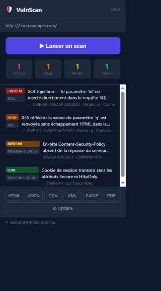

VulnScan
Scanner de vulnérabilités
OWASP Top 10
, directement dans Chrome DevTools.

4 failles détectées en quelques secondes
0
modules de détection
JSON
SARIF
HTML
github.com/Chr77s/vulscan-windows
Extension Chrome · Backend Python · OWASP Top 10